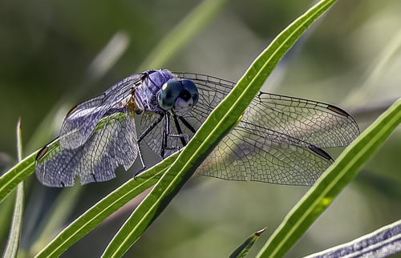

The Beautiful Dragon
07/07/2020 Most people imagine this when thinking of a Dragonfly but flying more is just a small phase in the life cycle of a dragonfly. Dragonflies spend most of their life span as swimming larvae in small streams and ponds. If you are a millennial you would probably remember seeing huge swarms of dragonflies flying from one water body to another in your childhood. But, now as one should have noticed it is not the same. Today, the Dragonfly count has dropped significantly across the continent. Experts blame it on the destruction and pollution of water bodies. This is a concerning issue as these beautiful arthropods occupy very important niches in the insect ecosystem. Dragonflies of ferocious predators, they feast on insects like mosquitoes, aphids, and midgets
“Dragonflies hunt insects with great precision and have a 95% success rate and can eat 30 flies in a row," says Dr. Stacey Combes studying Dragonfly biomechanics at Harvard.
Being a predator of pest insects they are beneficial for farmers to have around their fields. Moreover, dragonfly larvae are voracious insect eaters, their favorite snack is mosquitoes. Thus, they decrease the spread of the diseases that are caused by mosquitoes. They are also essential for ecological balance in pond ecosystems. And having a healthy ecosystem results in a better quality of water.
But today, urbanization and water pollution pose a great threat to dragonflies. Urbanization often results in oil spillage( sometimes from precautionary measures against mosquitoes) over water bodies which kills all the aquatic fauna. Water pollution increases the biological oxygen demand of ponds and lakes, thus wiping out most of the native organisms.
India has over 500 Dragonfly species. So, conserving them is crucial not only for the benefits they offer, but also to sustain the genetic heritage of the continent. As naturalists, our goal should be awareness among the general public about ecological issues and force responsible Ministries to have greater concern about the ecological impact of development they offer. We must also share our views and suggestions with the authorities to improve their plans.
Author:
FAIZEE ALI KHAN is Bachelor's Student in the Indian institute of Science Education and Research Tirupati
Related Articles

Cockroaches can live without head
NewTo most of the people out there, cockroaches are already very revulsive and creepy organisms. After knowing the fact that it can live for several days without a head, it definitely makes one’s skin...
Ant Which Love Electrics
NewYes, you read the title right! These ants, or to be precise, Raspberry Crazy Ants, seems to be attracted to electrical equipments. Nylanderia fulva which is an ant found in South America is not called “crazy” due to their weird infatuation for our gadgets, but because of their random, nonlinear movements...


The Bee Dance
NewEver wondered why and how a Firefly(lightning bug) is able to light up?? Is it to scare away predators? or to communicate with its peers? or to produce heat for keeping itself warm? In this article we have covered answers to all such questions and more...